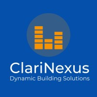
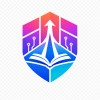

// Experience

ClariNexus
- Built interactive data applications with Django, FastAPI, and Streamlit visualizing 30,000+ time-series data points per session
- Reduced data anomalies by over 70% through validation, structured logging, and error tracking
- Improved pipeline performance by 60% via REST API ingestion with Pandas/NumPy and JMeter load testing
LinePal
- Performed authenticated and unauthenticated security testing across frontend, API, and backend infrastructure
- Built automated Node.js pipelines to ingest 1,000+ API requests into a structured security assessment
- Identified, documented, and resolved 14 confirmed vulnerabilities (CWE-class)

Conestoga College Cyber Security Association (CCSA)
- Founded the college's first fully accredited cybersecurity club
- Led a team of 4 executives and 80+ members, hosting collaborations with Google Developers Group and University of Guelph Cybersecurity Club
- Delivered hands-on workshops covering CTFs, cryptography, phishing, and Kali Linux with 150+ attendees